المرجع المعتمد
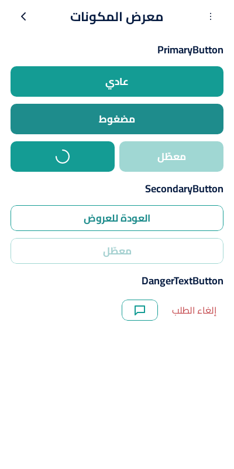
16 لقطة · المقاس 400×800 بكسل في المنصتين (1×) · RTL · Cairo بأربع أوزان ثابتة · فاتح فقط.
اعتماد المالك: لقطات Android الست عشرة معتمدة ومحفوظة في design/reference/gallery.
الفرق يُحسب لـ iOS مقابل المرجع المعتمد، وقبل الاعتماد مقابل لقطة Android. البكسل يُحسب مختلفًا إذا زاد فرق أي قناة عن 24؛ صورة الفرق تُعلّم البكسلات المختلفة بالأحمر.
لقطات Android معتمدة. نسب iOS مؤجلة بقرار DEC-045 إلى الدفعة الأخيرة «تحقق iOS»؛ المهمة اليدوية الجاهزة اسمها Final iOS validation.


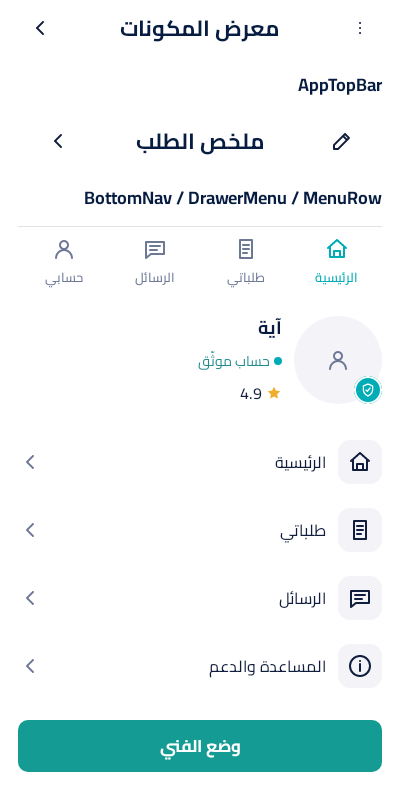

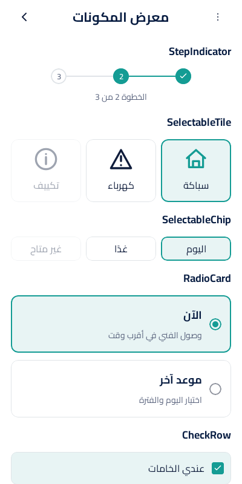


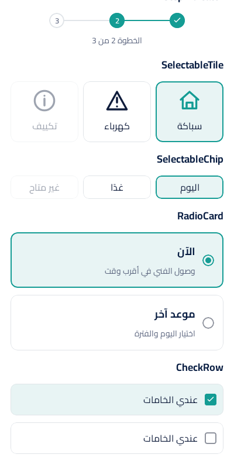
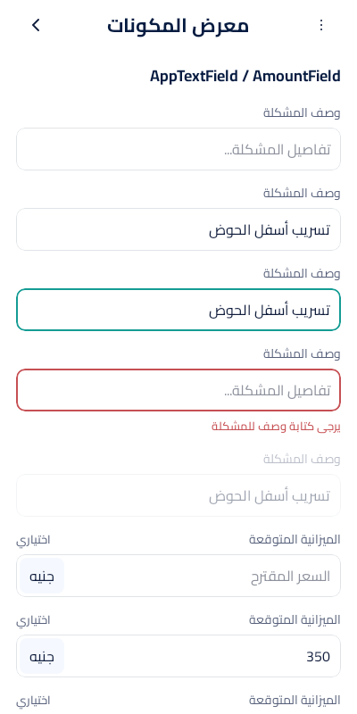

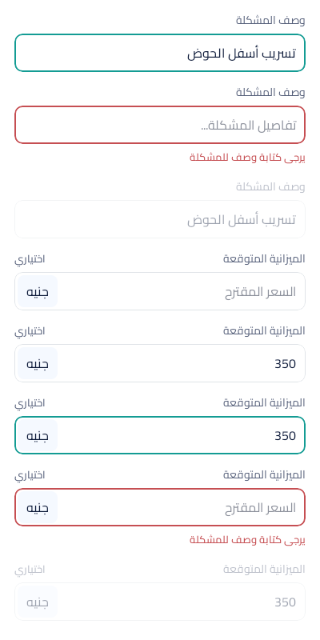


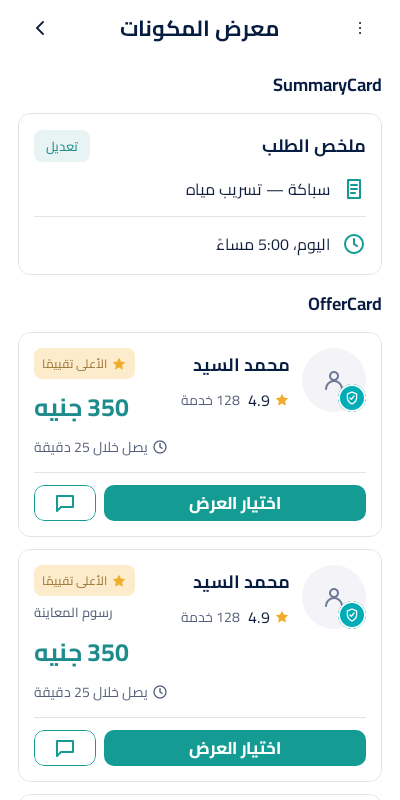

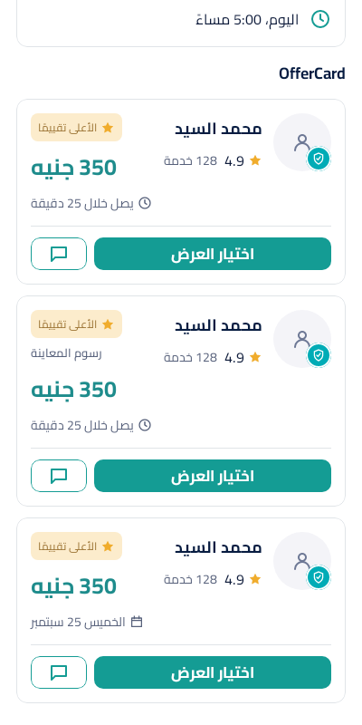
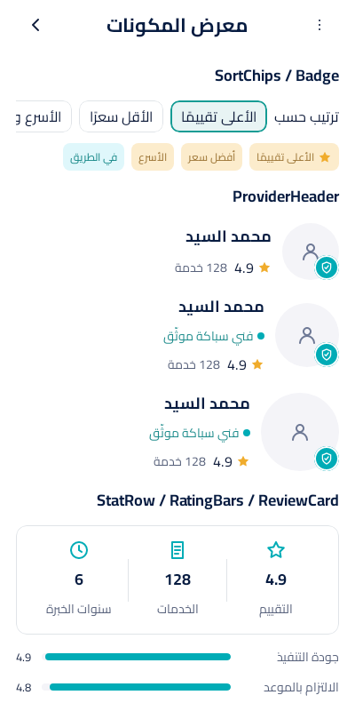

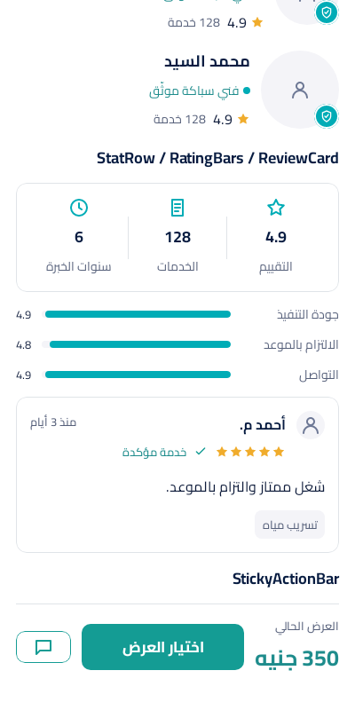


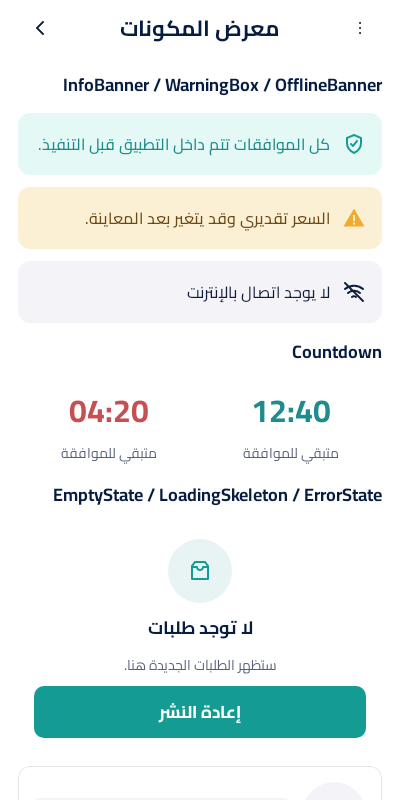

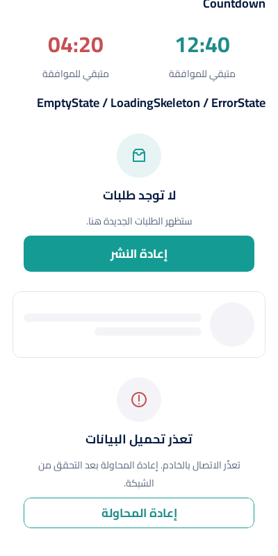

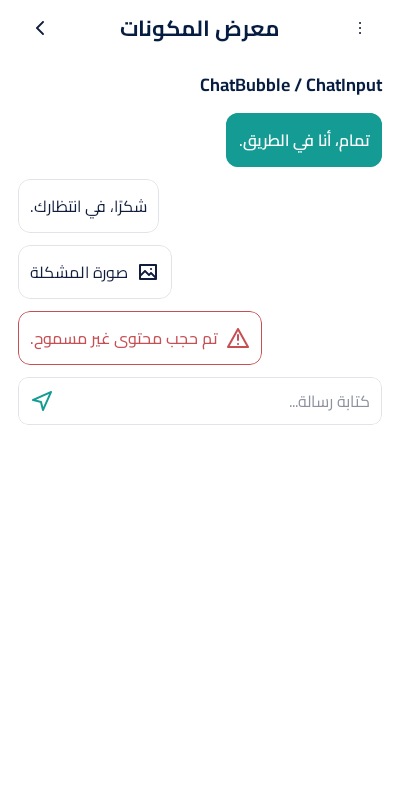
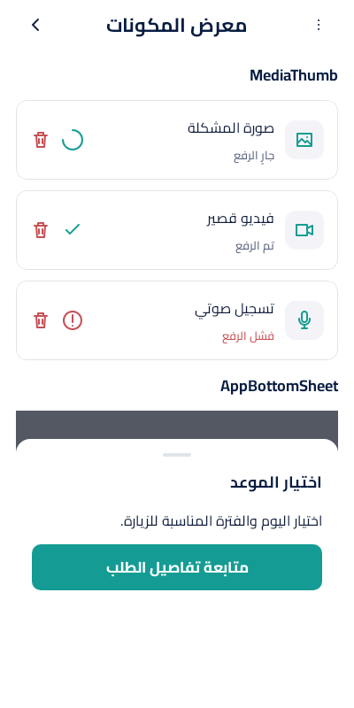

 C05
C05
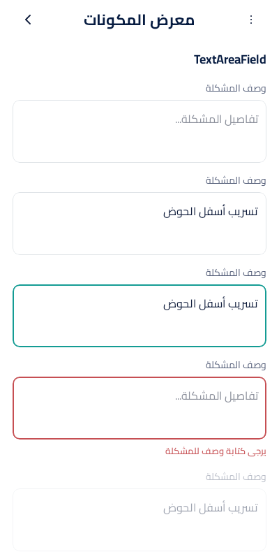
 C03
C03